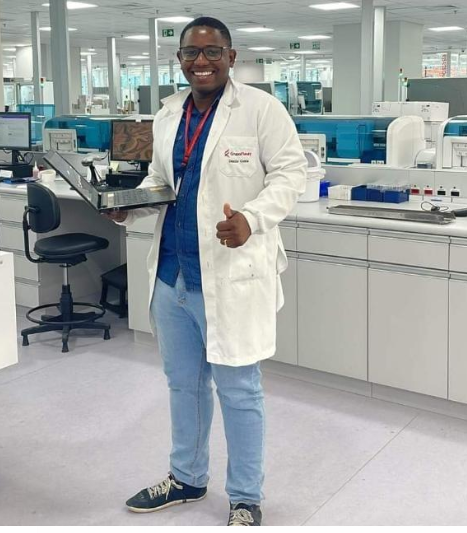
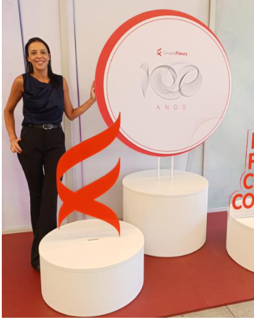

Propósito Institucional
"Garantir a disponibilidade, a segurança e a eficiência dos recursos tecnológicos e equipamentos, apoiando a qualidade, a segurança assistencial e a continuidade das operações."
Pilares de Atuação
Estrutura Organizacional

Francisli
Condução estratégica, governança corporativa e excelência na gestão do parque tecnológico.
Camila
Planejamento operacional, organização de fluxos, manutenções e alinhamento de resultados.
Profissionais Comprometidos
Profissionais comprometidos com a excelência, segurança, inovação e melhoria contínua dos processos da Engenharia Clínica.

Danilo Costa
Assistente Administrativo e Apoio Estratégico
Suporte administrativo, indicadores, rastreabilidade via QR Code e gestão documental.
Ivan
Operações / Técnico
Atendimento a chamados críticos, calibrações e suporte técnico corretivo e preventivo.
Kamila
Analista / Processos
Gestão de peças, inspeções de segurança e otimização dos fluxos operacionais.

Lidia
Analista / Logística
Controle de inventário, relatórios de disponibilidade e interface com fornecedores.
SIGEM Enterprise • Engenharia Clínica
Excelência • Segurança • Inovação